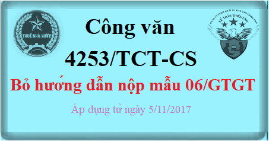

Ngày 20/9/2017 Tổng cục thuế ban hành Công văn 4253/TCT-CS Bỏ hướng dẫn nộp Mẫu 06/GTGT đăng ký áp dụng thuế GTGT theo pp khấu trừ. Như vậy DN không phải nộp mẫu 06/GTGT để đăng ký pp tính thuế -> Áp dụng từ ngày 5/11/2017.
KẾT LUẬN: Theo Công văn 4253/TCT-CS thì từ ngày 5/11/2017:
- Doanh nghiệp (DN mới thành lập và DN đang hoạt động có doanh thu chịu thuế GTGT dưới một tỷ đồng) -> Không phải nộp mẫu 06/GTGT để đăng ký áp dụng thuế GTGT theo phương pháp khấu trừ.
- Việc xác định phương pháp tính thuế GTGT căn cứ theo Hồ sơ khai thuế GTGT do cơ sở kinh doanh gửi đến cơ quan thuế. Cụ thể theo nội dung Công văn bên dưới nhé.
--------------------------------------------------------------------
| BỘ TÀI CHÍNH | CỘNG HÒA XÃ HỘI CHỦ NGHĨA VIỆT NAM |
| TỔNG CỤC THUẾ | Độc lập - Tự do - Hạnh phúc |
| ------------------------------ | -------------------------------- |
| Số: 4253/TCT-CS | Hà Nội, ngày 20 tháng 9 năm 2017 |
|
V/v giới thiệu điểm mới tại Thông tư số 93/2017/TT-BTC ngày 19/9/2017 về phương pháp tính thuế |
Kính gửi: Cục Thuế các tỉnh, thành phố trực thuộc Trung ương.
Ngày 19/9/2017, Bộ Tài chính ban hành Thông tư số 93/2017/TT-BTC sửa đổi, bổ sung Khoản 3, Khoản 4 Điều 12 Thông tư số 219/2013/TT-BTC ngày 31/12/2013 (đã được sửa đổi, bổ sung tại Thông tư số 119/2014/TT-BTC ngày 25/8/2014) và bãi bỏ Khoản 7 Điều 11 Thông tư số 156/2013/TT-BTC ngày 06/11/2013 của Bộ Tài chính để cải cách thủ tục hành chính trong việc đăng ký và chuyển đổi phương pháp tính thuế GTGT nhằm tạo thuận lợi cho doanh nghiệp. Thông tư số 93/2017/TT-BTC có hiệu lực ngày 05/11/2017.
Tổng cục Thuế giới thiệu những nội dung mới của Thông tư số 93/2017/TT-BTC ngày 19/9/2017 của Bộ Tài chính như sau:
1. Bỏ hướng dẫn nộp Mẫu 06/GTGT để đăng ký áp dụng thuế GTGT theo phương pháp khấu trừ đối với cơ sở kinh doanh mới thành lập và cơ sở kinh doanh đang hoạt động có doanh thu chịu thuế GTGT dưới một tỷ đồng.
Trước đây:
Cơ sở kinh doanh mới thành lập và cơ sở kinh doanh đang hoạt động có doanh thu chịu thuế GTGT dưới một tỷ đồng phải gửi Mẫu 06/GTGT đến cơ quan thuế để đăng áp dụng thuế GTGT theo phương pháp khấu trừ. Trường hợp không gửi Mẫu 06/GTGT đến cơ quan thuế thì kê khai thuế GTGT theo phương pháp trực tiếp.
2. Bỏ hướng dẫn nộp Mẫu 06/GTGT khi chuyển đổi phương pháp tính thuế GTGT.
Trước đây:
Khi chuyển đổi áp dụng các phương pháp tính thuế giá trị gia tăng (từ phương pháp trực tiếp sang phương pháp khấu trừ và ngược lại) thì cơ sở kinh doanh phải nộp Mẫu 06/GTGT đến cơ quan thuế.
3. Bổ sung hướng dẫn Phương pháp tính thuế GTGT của cơ sở kinh doanh xác định theo Hồ sơ khai thuế giá trị gia tăng hướng dẫn tại Điều 11 Thông tư số 156/2013/TT-BTC ngày 06/11/2013 của Bộ Tài chính (đã được sửa đổi, bổ sung tại Điều 1 Thông tư số 119/2014/TT-BTC ngày 25/8/2014 và Điều 2 Thông tư số 26/2015/TT-BTC ngày 27/2/2015 của Bộ Tài chính).
Như vậy, kể từ ngày Thông tư số 93/2017/TT-BTC có hiệu lực:
Việc xác định phương pháp tính thuế GTGT căn cứ theo Hồ sơ khai thuế GTGT do cơ sở kinh doanh gửi đến cơ quan thuế, cụ thể:
- Nếu cơ sở kinh doanh đăng ký áp dụng thuế GTGT theo phương pháp khấu trừ thì gửi Tờ khai thuế GTGT Mẫu số 01/GTGT, 02/GTGT đến cơ quan thuế.
- Nếu cơ sở kinh doanh đăng ký áp dụng phương pháp trực tiếp thì gửi Tờ khai thuế GTGT Mẫu số 03/GTGT, 04/GTGT đến cơ quan thuế.
(Tờ khai thuế GTGT Mẫu số 01/GTGT, 02/GTGT, 03/GTGT và 04/GTGT ban hành kèm theo Thông tư số 156/2013/TT-BTC ngày 06/11/2013 của Bộ Tài chính - đã được sửa đổi, bổ sung tại Thông tư số 119/2014/TT-BTC ngày 25/8/2014 và Thông tư số 26/2015/TT-BTC ngày 27/2/2015 của Bộ Tài chính)
Tổng cục Thuế giới thiệu các nội dung mới của Thông tư số 93/2017/TT-BTC ngày 19/9/2017 của Bộ Tài chính và đề nghị các Cục Thuế khẩn trương tuyên truyền, phổ biến, thông báo cho cán bộ thuế và người nộp thuế trên địa bàn quản lý biết. Trong quá trình thực hiện, nếu có khó khăn, vướng mắc, đề nghị các Cục thuế kịp thời tổng hợp, phản ánh về Tổng cục Thuế để được nghiên cứu giải quyết./.
|
Nơi nhận: - Như trên; - Lãnh đạo Bộ (để báo cáo); - Lãnh đạo Tổng cục Thuế (để báo cáo); - Vụ PC, CST, Cục TCDN, Vụ CĐKT - BTC; - Các Vụ, đơn vị thuộc TCT; - Website Tổng cục Thuế; - Lưu: VT, CS (3). |
KT. TỔNG CỤC TRƯỞNG PHÓ TỔNG CỤC TRƯỞNG Cao Anh Tuấn |
--------------------------------------------------------------------
Tải Công văn 4253/TCT-CS về:
Bước 1: Comment mail vào phần bình luận bên dưới
Bước 2: Gửi yêu cầu vào mail: ketoandieutam@gmail.com (Tiêu đề ghi rõ Muốn tải Công văn 4253/TCT-CS)
-------------------------------------------------------------------------
